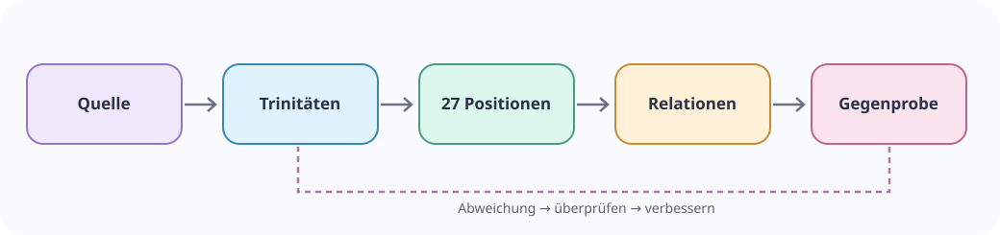

Was bedeutet die Behauptung?
Begriffe und Voraussetzungen in einfacher Sprache erklären, eine anschauliche Situation zeigen und unterscheiden, welche Teile gesichert oder offen sind.
 Gemeinsam entdecken · prüfen · entwickeln
Gemeinsam entdecken · prüfen · entwickelnWissenschaft ist voller Beziehungen. Erforsche ein eigenes Fachgebiet, finde neue Muster und teile, was sich mit Quellen und Gegenproben belegen lässt.
Eigene Forschungsaufgabe findenDas Logik-Tensor-Paper kennenlernenIm Tensor bleibt der Wissenschaftsraum exakt 3×3×3. Er begrenzt weder die Anzahl externer Skills noch die Zahl der Mitwirkenden. Eine eigene Hypothese wird als solche gekennzeichnet und mit Quellnachweisen und Tests überprüft.
Jeder Task beginnt mit der allgemeinen Frage Was haben wir, was verbindet es, und woran erkennen wir ein Ergebnis? Dann wird sie in der Fachsprache des jeweiligen Bereichs beantwortet. So bleibt die Aufgabe verständlich, ohne die wissenschaftliche Präzision aufzugeben.
Vereinfachtes, quelltextbasiertes Prozessdiagramm; wissenschaftliche Validierung erfolgt je Modell und Feldakte.
Ein kleiner Forschungsbeitrag braucht eine Aufgaben-ID, die Prüffrage, reproduzierbare Eingaben, eine Beobachtung sowie offene Gegenbefunde. Das Ergebnis lässt sich im Browser als standardisierte JSON-Datei erstellen oder kopieren. Dabei werden keine Daten automatisch übertragen und keine wissenschaftlichen Prüfungen behauptet.
Forschungsbeitrag vorbereiten und exportieren · Freigabe- und Testablauf verstehen
Die Karten zeigen konkrete Arbeitspakete. Insbesondere Glossar und Codebuch vollständig integrieren ist ausdrücklich als offener Mitmach-Task formuliert – nicht als erledigte Forschungsarbeit.
Aufgabenregister wird geladen …
Aus etablierten Formeln und wissenschaftlichen Modellen entstehen prüfbare Relationskandidaten. Die nächsten gemeinsamen Ernten umfassen: DLMF-Formeln und Strukturklassen, Wissenschaftsmodelle und Dreierfamilien, Codebuch-Discovery, Physik- und Quantenbibliotheken, frei verwendbare Sprachbestände, API-/Skillregister, Quellenbeweise und Gegenproben.
Ausführlicher Forschungsbericht zum Harvesting · Ergebnisbilanz und historische Modulstände. Die vollständigen historischen Archivdateien sind derzeit nicht sämtlich auf Git veröffentlicht; fehlende Dateien müssen vor Bearbeitung anhand des No-Loss-Registers beschafft werden.
Wie viele Formen stecken in wenigen Regeln? Entdecke die Geo-KI und ihre parametrisierbaren Formen. Bilder, Mermaid-Diagramme, Originalquellen und Designregeln stehen gesammelt im Medien- und Quellenbereich – auch zum Übernehmen in deinen eigenen KI-Arbeits-Prompt.
Wenige Regeln erzeugen viele Formen. Der nächste Meilenstein soll die Formen generieren, zu neuen Verfahren zusammensetzen, mathematisch prüfen und in offenen Formaten exportieren. Ein zusätzlicher Forschungsbereich sammelt offene Datenformate, Bibliotheken und wissenschaftliche Schnittstellen – mit Rückrechnung statt bloßer Konvertierungsbehauptung.
Entdecke die Format- und Skilllandschaft · Die wissenschaftliche Tensor-Idee kennenlernen
Glossar-Einstieg (derzeit 12 Web-Kurzdefinitionen; historischer Bestand 1.072 Einträge) · Codebuch-, Glossar- und Quellen-Fundorte · Forschungspaper · Taskregister mit sämtlichen Prompts und Quellen-URLs

Wissenschaftliche Mitarbeit · verständlich und fachlich präzise
Menschen müssen kein GitHub-Konto und keinen Zugang zu internen KI-Systemen besitzen, um eine Forschungsfrage nachvollziehen zu können. Es gibt verschiedene Wege der Beteiligung: einen Fachbegriff erklären, eine bereits genannte Quelle tatsächlich prüfen, einen Schluss nachrechnen oder ein Gegenmodell finden. Der geeignete Umfang ergibt sich aus der Frage, nicht aus einer festen Zeichenlänge.
Begriffe und Voraussetzungen in einfacher Sprache erklären, eine anschauliche Situation zeigen und unterscheiden, welche Teile gesichert oder offen sind.
Ähnliche Modelle, Geltungsbedingungen, widersprechende Begriffe, Ausnahmen und die historische Entwicklung nebeneinander prüfen.
Eine präzise Quelle, Rechen- oder Testbedingungen, den beobachteten Befund, einen möglichen Gegenfall und die Grenzen der Aussage dokumentieren.
Die konkrete wissenschaftliche Frage, erlaubte Quellen und das erwartete Ergebnis. Für Mitmachende muss die Aufgabe allein verständlich sein.
Werkzeuge, Rollen, Eingabe- und Ausgabeformate, Qualitätsprüfungen und Übergaben. Interne Zugänge werden nicht veröffentlicht.
Welches Gesamtmodell wird vorausgesetzt? Welche Alternativen, Verzerrungen oder fehlenden Beweise beeinflussen die Aufgabe?
Offene Quellenprüfungen eignen sich besonders für einen ersten Beitrag: Eine konkrete Fundstelle suchen, ihren Wortlaut prüfen und offenlegen, falls das Dokument nicht erreichbar war. Eine Quellenauswahl ist noch keine wissenschaftliche Bestätigung des Inhalts.
Forschungsfrage · Logik-Tensor und weitere Fachgebiete
Untersuche ein öffentlich dokumentiertes wissenschaftliches Modell: Welche Gegenstände und Beziehungen sind definiert, welche Regeln gelten, und welche Dreiteilung ergibt sich aus dem Fachgebiet selbst? Vergleiche die eigene fachliche Gliederung mit der historischen Tensorsprache und den neueren operativen Triaden. Wenn keine vollständige Dreierentsprechung nachweisbar ist, ist gerade das ein wertvolles Forschungsergebnis.
Arbeitsstand: Die Fachfrage ist vorbereitet. Eine vollständige, tatsächlich getestete öffentliche KI-Anweisung mit freigegebenem Rückgabeformular liegt dafür noch nicht vor.
Eine offene Aufgabe wird nicht automatisch durch einen veröffentlichten Roh-Prompt bearbeitbar. Vor der Freigabe werden Fachgrundlagen und Quellen zugeordnet, die Fragestellung erklärt, die Anweisung mit realen Beispielen ausprobiert, Ergebnisse und Grenzen geprüft und die öffentliche Fassung redaktionell freigegeben.
Der einfache Frage-Prompt auf einer Fachseite dient dem Einstieg. Ein Mitmach-Prompt muss zusätzlich eine eigenständig bearbeitbare Aufgabe, nachvollziehbare Testkriterien und ein Rückgabeformat haben. Interne Kernaufgaben bleiben intern; externe Teilaufgaben dürfen gezielt geöffnet werden.
Algebra-Entwicklung und Gegenproben · Offene Werkzeuge im Forschungsinkubator · Quellen und Übergabematerial